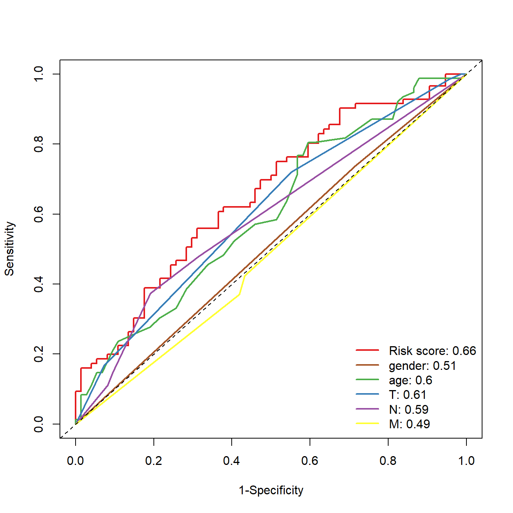

rm(list = ls())
library(timeROC)
library(survival)
load(file = "./datasets/timeROC.RData")25 生存资料ROC曲线绘制
生存资料的ROC曲线考虑了时间因素，在画ROC时，需要指定是哪个时间点的ROC。
生存资料的ROC曲线绘制，最常见的那肯定是timeROC和survivalROC了，这两个包非常像，我比较喜欢用timeROC。
25.1 加载R包和数据
25.2 多个时间点ROC
首先看一下数据结构，对于多个时间点的ROC，需要3列数据：time, event, marker(比如你计算得到的risk score)。
看一下画图所需的数据长什么样子，event这一列，0代表living，1代表dead，futime这一列单位是年，也可以改成其他的。
str(df)
## 'data.frame': 297 obs. of 3 variables:
## $ event : num 0 0 1 0 0 1 0 0 0 0 ...
## $ riskScore: num -0.249 -0.511 -0.211 -0.427 0.279 ...
## $ futime : num 3.03 1.16 1.82 1.52 1.34 ...# 构建timeroc
ROC <- timeROC(T=df$futime,
delta=df$event,
marker=df$riskScore,
cause=1, #阳性结局指标数值
weighting="marginal", #计算方法，默认为marginal
times=c(1, 2, 3), #时间点，选取1年，3年和5年的生存率
iid=TRUE)
ROC #查看模型变量信息
## Time-dependent-Roc curve estimated using IPCW (n=297, without competing risks).
## Cases Survivors Censored AUC (%) se
## t=1 57 203 37 71.02 3.68
## t=2 66 106 125 69.23 3.94
## t=3 68 74 155 65.53 4.85
##
## Method used for estimating IPCW:marginal
##
## Total computation time : 0.07 secs.画图很简单：
plot(ROC,
time=1, col="red", lwd=2, title = "") #time是时间点，col是线条颜色
plot(ROC,
time=2, col="blue", add=TRUE, lwd=2) #add指是否添加在上一张图中
plot(ROC,
time=3, col="orange", add=TRUE, lwd=2)
#添加标签信息
legend("bottomright",
c(paste0("AUC at 1 year: ",round(ROC[["AUC"]][1],2)),
paste0("AUC at 2 year: ",round(ROC[["AUC"]][2],2)),
paste0("AUC at 3 year: ",round(ROC[["AUC"]][3],2))),
col=c("red", "blue", "orange"),
lty=1, lwd=2,bty = "n") 
25.3 多指标ROC
首先也是看一下所需要的数据结构，其中futime和event是必须的，另外的几列是你想要用来画ROC曲线图的指标，可以自己添加，在这里我使用了riskScore, gender, TNM分期。 在gender这一列，1是female，2是male，t,n,m这3列，数字代表不同的分期
str(df2)
## 'data.frame': 297 obs. of 8 variables:
## $ event : num 0 0 1 0 0 1 0 0 0 0 ...
## $ age : int 59 63 65 73 59 66 56 42 61 48 ...
## $ riskScore: num -0.249 -0.511 -0.211 -0.427 0.279 ...
## $ futime : num 3.03 1.16 1.82 1.52 1.34 ...
## $ gender : num 2 2 2 1 2 2 1 2 2 2 ...
## $ t : num 4 4 4 3 3 3 5 3 NA 4 ...
## $ n : num 1 5 1 1 1 1 3 1 NA 1 ...
## $ m : num 1 1 1 1 1 3 1 1 3 3 ...多指标的ROC曲线非常简单，就是构建多个ROC，依次添加即可：
# riskScore的ROC曲线
ROC.risk <- timeROC(T=df2$futime,
delta=df2$event,
marker=df2$riskScore,
cause=1,
weighting="marginal",
times=3,
iid=TRUE)
# gender的ROC曲线
ROC.gender <- timeROC(T=df2$futime,
delta=df2$event,
marker=df2$gender,
cause=1,
weighting="marginal",
times=3,
iid=TRUE)
# age的ROC曲线
ROC.age <- timeROC(T=df2$futime,
delta=df2$event,
marker=df2$age,
cause=1,
weighting="marginal",
times=3,
iid=TRUE)
# T分期的ROC曲线
ROC.T <- timeROC(T=df2$futime,
delta=df2$event,
marker=df2$t,
cause=1,
weighting="marginal",
times=3,
iid=TRUE)
# N分期的ROC曲线
ROC.N <- timeROC(T=df2$futime,
delta=df2$event,
marker=df2$n,
cause=1,
weighting="marginal",
times=3,
iid=TRUE)
# M分期的ROC曲线
ROC.M <- timeROC(T=df2$futime,
delta=df2$event,
marker=df2$m,
cause=1,
weighting="marginal",
times=3,
iid=TRUE)把每个曲线拼在一起即可，添加一个图例：
plot(ROC.risk, time = 3, col="#E41A1C", lwd=2, title = "")
plot(ROC.gender, time = 3, col="#A65628", lwd=2, add = T)
plot(ROC.age, time = 3, col="#4DAF4A", lwd=2, add = T)
plot(ROC.T, time = 3, col="#377EB8", lwd=2, add = T)
plot(ROC.N, time = 3, col="#984EA3", lwd=2, add = T)
plot(ROC.M, time = 3, col="#FFFF33", lwd=2, add = T)
legend("bottomright",
c(paste0("Risk score: ",round(ROC.risk[["AUC"]][2],2)),
paste0("gender: ",round(ROC.gender[["AUC"]][2],2)),
paste0("age: ",round(ROC.age[["AUC"]][2],2)),
paste0("T: ",round(ROC.T[["AUC"]][2],2)),
paste0("N: ",round(ROC.N[["AUC"]][2],2)),
paste0("M: ",round(ROC.M[["AUC"]][2],2))
),
col=c("#E41A1C", "#A65628", "#4DAF4A","#377EB8","#984EA3","#FFFF33"),
lty=1, lwd=2,bty = "n") 